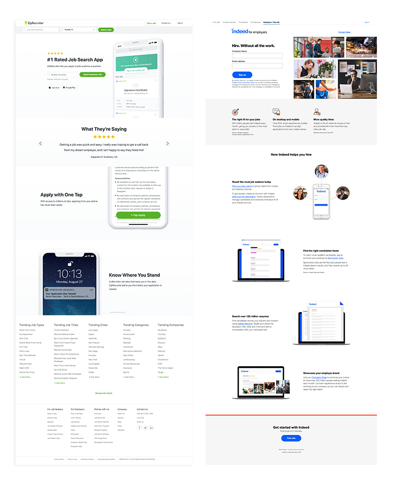
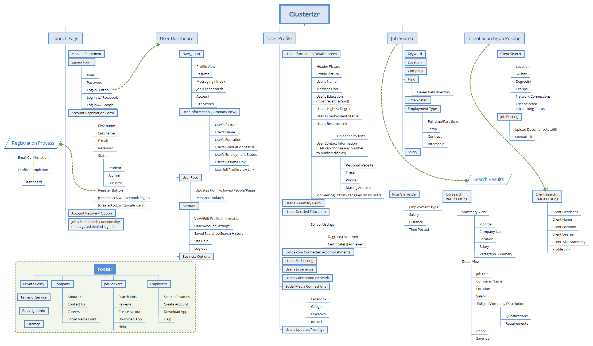
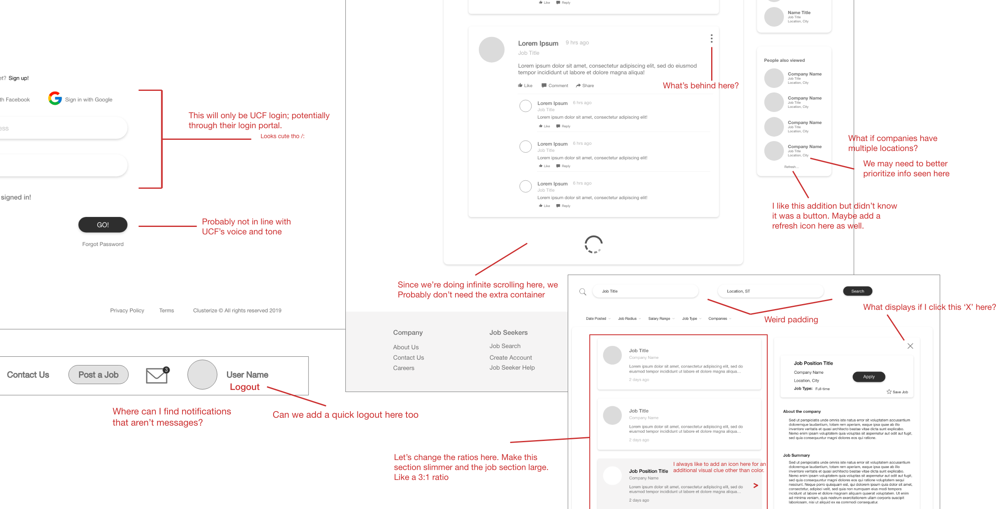

Overview
Clusterizr's mission is to ease and strengthen the connection of UCF students & alum with local companies in the tech industry. On a team of UX engineers, designers, developers, and marketing specialists, Clusterizr came to life with a "by students, for students" motto. Leading the UX team to create progressive wireframes, models, sitemaps and prototypes was an amazing, productive experience.
Timeline
16 weeks (about 8 sprints)
Project Status
Launched 🚀
Team
- Anna: Project Manager
- Ross: Lead Researcher
- Rachel (Me): Lead UX Designer
- Maria: Marketing Analyst
- Matt: Design & Research Assist
My Roles in depth
- Market analyses
- Wireframing
- Prototyping
- Hi-Fidelity Design
Problem Statement
With Clusterizr, we aim to create a UCF-exclusive digital environment for students of all majors and degrees to connect with other
students, recent grads, alum, professors, faculty and local Orlando-based companies with longevity and trust.
Business objectives:
- UCF-branding should be implemented with recognizability
- The application will need to be secure with access by UCF NIDs or alike only
- Engage students with familiar and up-to-date design
- Communications should be available via feeds and individual DM
- Site should encourage students to be active within the applicaiton with efficient response
- UCF Careers Services will be loosely-tied to the application for mediation and assistance
- Site is to be accessible via desktop and mobile devices with a future scope of native application
Discovery Phase
This first project phase was our opportunity to familiarize ourselves with the industry of social platforms by interviewing stakeholders, polling users, aministering
market and pattern analyses and matching our findings with our problem statement above.
It was our chance to ask the questions:
"What is the expecation of the app?"
"How is the problem currently being solved elsewhere?"
Market & Pattern Analyses
Familiar to social networking platforms only as users, the team needed to gain a stronger market-based understanding.
Using metrics defined
by our problem statement, we analyzed current market applications for their outreach, trust, connectivity and
keepers/improvements (features to steal, fix or
intentionally leave out). Amongst 36 competitors, we deeply analyzed 12 of them. These competitors were
also mentioned by users and stakeholders in our
researcher's initial interviews.
These competitors included Linkedin,
ZipRecruiter,
Indeed,
UCF Handshake,
Instagram,
Monster and more.
*We included Instagram because while it is a social platform, it is increasingly being utilized in small businesses to grow, connect and increase revenue.
The Keepers
Components and features that made the analyzed sites successful.- Asynchronous loading. Beneficial to job seeker sites as it increases user retention and location awareness within the application.
- Informative marketing. Landing pages and marketing strategies were commended when they offered enticing and informatve content to visitors that may be skeptical of engaging with a site or app.
- Simplicity. Using only the information necessary to convey a message recieved higher praise than otherwise.
- Trust & Personality. Sites with clean and updated UI signified greater trust in an application and in the end, a greater amount of users with a decreased bounce rate.
The Improvements
Market features that interfered with the experience.- Responsiveness. Modern development should go without saying but responsiveness should always, always, always be factored into design.
- Voice & Design. Sites that used illustrations, choice fonts, consistent UI ranked higher than those with out-dated, inconsistent and un-engaging interfaces.
- Navigation. Some sites lacked familiar navigational features very important to user interaction. It seemed as though it was an app modernization gone wrong.
- Overwhelming footers. Why a footer needs to be a novel is beyond me; especially when catering to younger users. Nesting the unnecessary routes that are in a lengthy footer can save space and appear less overwhelming to the viewer.
Defining key personas
Student PersonaKelsea Gharam is a web programmer and UCF senior with the portfolio and experience to compliment a great team. She lacks network connections in her area since he has been mainly focused on schooling. Kelsea is looking for a place to share experience with and discover local opportunities.
Recruiter PersonaTerry Williams is a recruiter for a large company headquartered in Orlando. Clusterizr allows him to seek local talent that fits the qualifications he needs. He relies on communication and credibility to further reach out to new grads.
Design Phase
Sitemap Proposal
This sitemap was an inital nightmere. The entire site had to include student-centered content and portals as well as faculty views and company/recruiter experiences. We settled on a composition that made sense to us in order to move forward with the wireframes. Our market analysts also used this map to ensure content was crafted and ready for launch.
Wireframing
Matt and I worked with our lead researcher to establish wireframes based off of our analyses, interviews and sitemap. It was a marathon of pulling patterns and innovating to prototype both desktop and mobile wireframes.
Wireframe Testing
Because of all the great applications that came before us, we crafted wireframes with confidence. Using a
collaborative Adobe XD document, we
marked up all wires for internal team and business critique. Most comments were related to technical oversites and features that were initally
overlooked.
We also hooked up our wireframes and presented them to students for testing. We received a lot of great feedback
specifically around the cognitive load that we'd need to account for as
students typically won't be able to handle as much informaion at once.
"The containers make it hard to tell what relates to where at times...especially in the modal views."
Annonymous user tester
Style Guide
The University of Central Florida has a great style guide that we were able to inspire our style guide off of. UCF's palette codes and fonts were beneficial to the outcome of Clusterizr's design. Whether the users consciously realize it or not, they know they are home.
Hi-Fidelity Designs
Our hi-fi prototype was comprised of 54 screens to capture the architecture of the site's capabilities. These included data visualization, modal forms, news feeds and different views for students, faculty and corporate professionals.